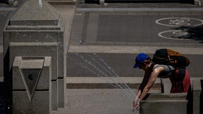

卑诗省于昨日再有10多个高温记录被打破，昨日全省最热的社区是内陆的利顿 （Lytton），气温超过摄氏40度；另外，也有多个地区的温度超过35度，部分地区更打破了维持了过百年的记录。加拿大环境部指出，全省大部分地区的高温警告会持续整个长周末，气温可能在下周再次攀升。
卑诗省昨日有13项高温记录被打破，连同周四的情况，两日内共有19项记录刷新。打破了8月2日单日气温记录的地区分别有利顿﹑维农（Vernon）﹑鲍威尔河（Powell River）﹑普林斯顿（Princeton）﹑克雷斯顿（Creston）等13个地区。其中，录得40.3度的利顿是昨日全省最热的地区；至于克雷斯顿更打破了在1922年创下的36.1度单日高温记录，昨日气温为37.5度。
加拿大环境部于今日上午对省内22个地区发出高温警告，指强劲的高压脊将带来长时间的炎热天气，虽然再周末结束时会稍为降温，但同时指出下周部分地区气温可能再次攀升。高温警告涵盖地区包括温哥华岛东部、豪湾（Howe Sound）﹑威士拿（Howe Sound）﹑库特尼（Kootenays）﹑奥肯那根山谷（Okanagan Valley‧）﹑汤普森南北部（south and north Thompson）等地区。